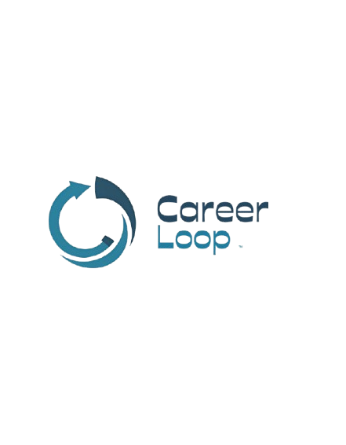

Introducing ⩟
Smart Student Dashboard
For Modern Learners
All-In-One Hub To Track Goals & Growth.


All-In-One Hub To Track Goals & Growth.
Welcome to CAREER LOOP
The Community feature connects students with peers who share similar academic interests and learning goals. It provides a space where users can discuss subjects, ask questions, and exchange study materials or notes. By encouraging interaction and collaboration, the community helps students support each other, stay motivated, and build a more engaging and productive learning environment.
The Classlytics helps students easily track and manage their class attendance. It calculates the current attendance percentage and shows how many classes a student needs to attend to meet the required minimum. By providing clear insights and predictions, the tool helps students plan their schedule better and avoid falling below attendance requirements.
ResuvoAI helps students improve their resumes using intelligent analysis and feedback. Users can upload their resume, and the system evaluates its structure, skills, and relevance for specific roles or companies. It then provides suggestions for improvement, helping students create stronger and more professional resumes that increase their chances of success.
SylloAI is an AI-powered tool that helps students quickly understand their syllabus by converting it into a clear and concise summary. It highlights key topics, important sections, and learning objectives so students can easily plan their studies. By simplifying complex syllabus content, SylloAI helps students stay organized and focus on what matters most.
IntervoAI is an AI-powered interview trainer that helps students prepare for real job interviews. It simulates interview questions based on different roles and provides feedback on responses, helping users improve their communication, confidence, and interview skills. By practicing with IntervoAI, students can better prepare themselves for real-world career opportunities.
SkillSwap is a peer-to-peer learning feature where students can teach and learn skills from each other. Users can offer sessions in subjects or skills they are good at, while others can join and learn for a small fee. This creates a collaborative environment where students grow together while sharing knowledge and building practical skills.